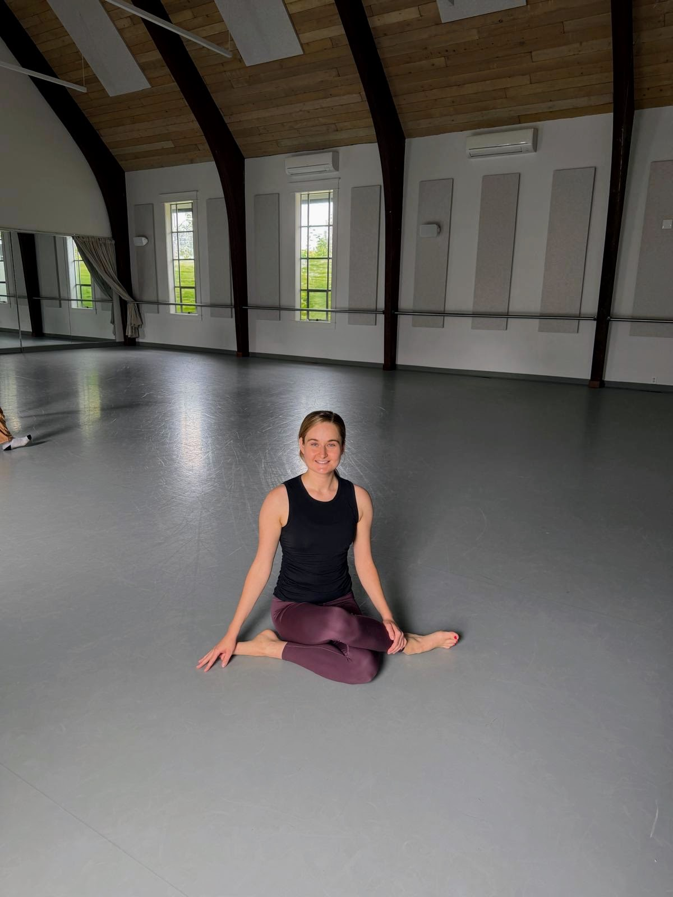
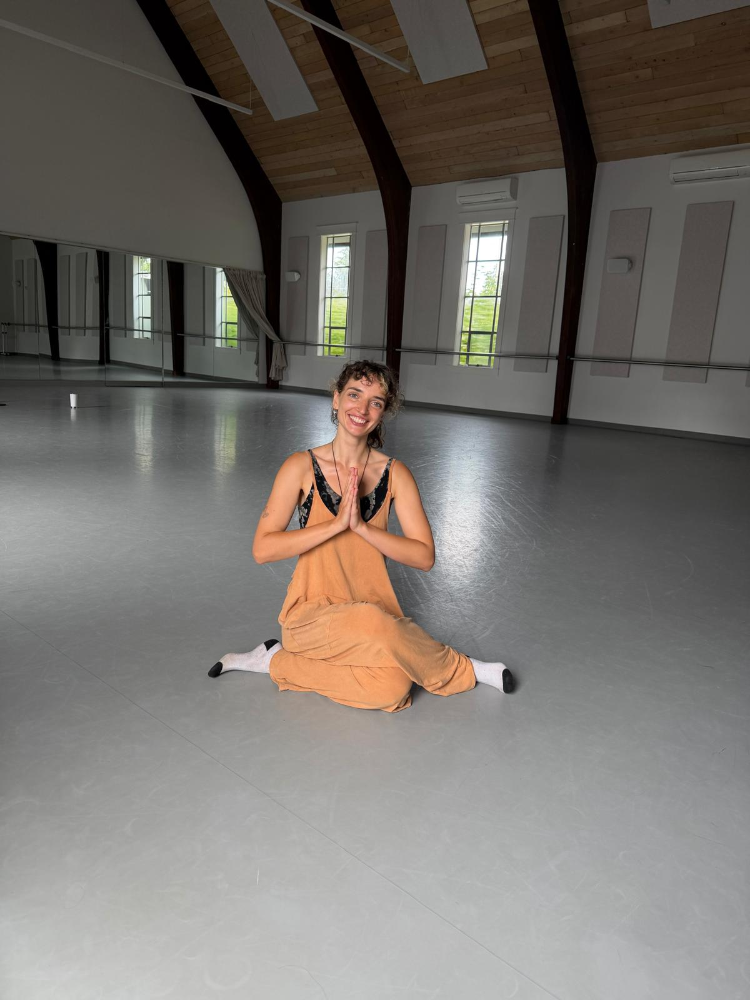

Diana is a 200-hour certified yoga teacher who weaves years of personal practice — on and off the mat — into every class she teaches. Her approach blends the grounded structure of vinyasa and slow-burn yin with insights from her own journey, creating space where movement and self-inquiry share the mat. Expect thoughtfully built sequences and a teacher who believes yoga works best when you bring your whole self to the mat.
"The collective is a safe incubator. It's a place where our graduating cohort can step out of YTT and actually test-drive what we've built. It's one thing to develop a sequence in training; it's another to teach it to a room of real people and see what lands. Having a space to experiment, stumble a little, and find our own teaching voice has made all the difference."

As a former software engineer and proud member of the techie-to-hippie pipeline, Katie's journey into yoga has been one of finding her way out of endless analysis and mental mazes and into embodiment. Her engineer's background gives her classes a logical structure that is easy for students to drop into, as well as empathy for challenges faced by many modern students of yoga - long hours spent sedentary and disconnected from the body. She also draws inspiration for her classes from a broad array of other sources: the Yoga Sutras and other philosophical texts, her interest in astrology and tarot, her background in dance and theater, and a deep love for connecting with people.
"The yoga collective is a safe space for new students and teachers alike - whether you're new to practicing yoga or teaching it, the collective will support you :)"
Paul is a longtime Centering Prayer practitioner and the founder of Contemplative Outreach Northwest. He has served as youth minister, community organizer, business owner, and HS theology teacher. Trained in Special Education, BreathWave breathing, and the 200-Hour Yoga program with Synergy Yoga School, he hopes to train as an End-of-Life Deathcare Doula. His daily practice explores the interweaving of contemplative meditation practices with yoga and a gentle contemplative-somatic conscious connected breathing practice called BreathWave, and this practice has evolved into the offering of extended silent retreats.
"I love these womyn (and Loic!!) .... They are the smartest, strongest, sweetest and sassiest people I know and have the privilege of being with. I feel fully loved, cared for and supported. I am constantly inspired by and learn from each and every one of them. They amaze me constantly."